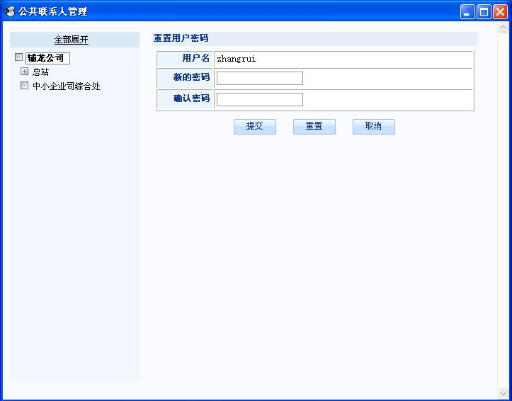
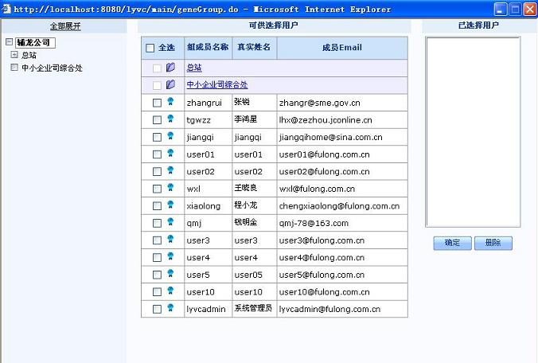

| 管理功能详解 > 公共联系人管理 |
| 公共联系人管理 |
| 系统提供强大的公共联系人管理功能，管理员可以方便的创建并维护联系人组织关系，属于公共联系人的用户将自动拥有丰富的联系人列表。 |
|
| 系统支持对公共联系人进行分组管理，可以根据您所在单位的部门组织结构在系统中创建对应的分组并添加用户，如图22所示。 |
 |
| 在当前组里直接注册新用户并添加到当前组。 |
 |
| 在列表页面选中一个用户后可以点击"重置用户密码"按钮来修改选定用户的密码。 |
 |
| 可以将用户在任意两个联系人组之间移动。 |
 |
| 系统管理员可以为除根组外的任意联系人组指定组管理员，组管理员可以是系统中任意注册用户。如下图所示，在弹出窗口中为选定的联系人组选择管理员。 |
 |